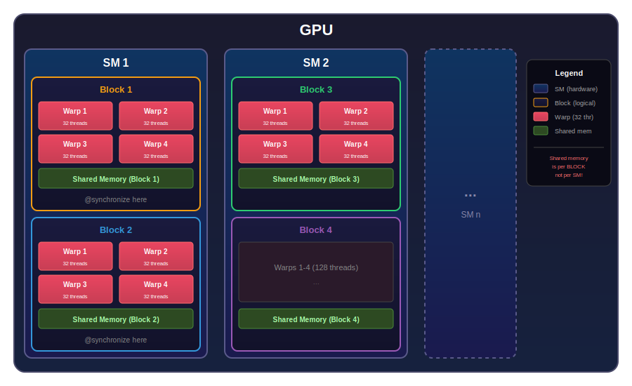
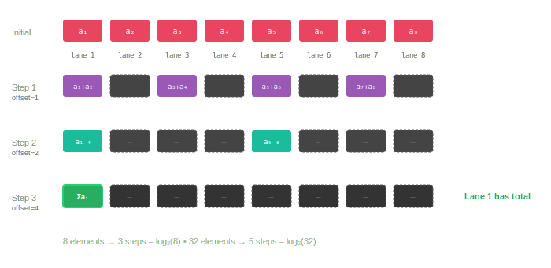
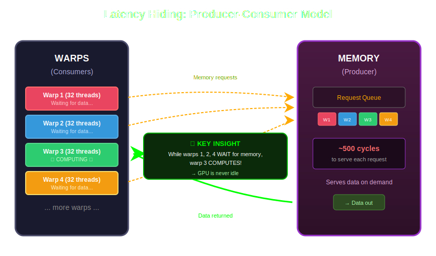

Introduction to GPU Architecture
The Mental Model
CPU: A few brilliant experts — 4–16 fast cores with complex logic, branch prediction, large caches. Optimized for sequential, complex tasks.
GPU: An army of simple workers — thousands of lightweight cores with minimal logic. Optimized for parallel, repetitive tasks.
GPUs trade individual thread performance for massive parallelism.
GPU Architecture: The Hierarchy

The GPU is organized in three levels:
- Warp: 32 threads executing in lockstep
- Block: Multiple warps that can share memory and synchronize
- SM (Streaming Multiprocessor): Physical hardware running blocks
The number of blocks we launch is an abstraction — the GPU scheduler assigns them to SMs.
Synchronization Within a Warp
Threads within a warp execute instructions in lockstep — they are implicitly synchronized. No explicit barriers are needed. When thread 0 performs x += 1, all other threads in the same warp observe the updated value of x immediately after the operation completes. Threads can read each other’s registers through shuffle operations.
Example: Summing 32 elements using only registers.

Each thread holds one value. Shuffle instructions allow threads to read directly from one another’s registers — no memory access required. The sum is computed in five steps, achieving \(O(\log_2 n)\) complexity.
Synchronization Between Warps (Within a Block)
Warps within a block execute independently — Warp 0 might complete while Warp 3 is still running.
To coordinate:
- Shared memory: fast on-chip memory visible to all threads in the block
@synchronize: a barrier forcing all warps to wait

After @synchronize, shared memory is consistent — every thread sees what others wrote before the barrier.
Synchronization Between Blocks
Blocks are independent — Block 1 on SM 1 knows nothing about Block 3 on SM 2. There is no @synchronize equivalent that works across blocks. The scheduler provides no guarantees about execution order: Block 47 might finish before Block 1 even starts, and not all blocks may be resident simultaneously.
To communicate between blocks:
Multi-kernel launches: The safest pattern. Kernel boundaries provide implicit global synchronization — all blocks from kernel 1 are guaranteed complete before kernel 2 starts. Adds launch overhead (~5-10 μs) but eliminates deadlock risks entirely.
Atomic operations: Hardware-guaranteed read-modify-write on global memory. Safe and correct, but slow (hundreds of cycles) and limited to primitive types (
Float32,Float64,Int32…).Global memory with fences: Regular writes combined with
fenceto ensure visibility. Faster than atomics for bulk data, but requires careful ordering — write data first, fence, then set a flag. The consumer must also fence after reading the flag before accessing the data.
The Memory Hierarchy
| Memory | Scope | Latency | Size | Bandwidth |
|---|---|---|---|---|
| Registers | Per thread | ~1 cycle | Limited | N/A |
| Shared | Per block | ~5 cycles | ~48 KB | ~10 TB/s |
| Global | All blocks | ~500 cycles | GBs | ~1 TB/s |
Summary: Synchronization & Memory
| Level | Synchronization | Memory | Cost |
|---|---|---|---|
| Within warp | Automatic (lockstep) | Registers | Free |
| Within block | @synchronize |
Shared memory | Cheap |
| Between blocks | Atomics / kernel launch | Global memory | Expensive |
The Puzzle: Why So Many Blocks?
A typical laptop GPU has ~4 SMs, each running a handful of warps concurrently — perhaps 512 threads executing at any instant.
Yet we routinely launch thousands of blocks. Why?
The answer lies not in compute, but in memory latency.
Memory: The Producer-Consumer View

Think of memory as a slow producer (~500 cycles per request) and threads as consumers.
If threads just waited, the GPU would be 99% idle.
Latency Hiding
The problem: Memory requests take ~500 cycles. If threads waited idly, the GPU would be stalled.
The solution: Keep many warps ready to run.
While Warp 1 waits for data, Warps 2–7 compute. The scheduler switches between them instantly — zero-cost context switching because each warp maintains its own registers.
More warps in flight = more latency hiding = higher throughput.
This is why we launch far more threads than can physically execute at once.
Coalesced Memory Access
Memory is transferred in chunks (typically 32 or 128 bytes). When threads in a warp access consecutive addresses, the hardware coalesces these into a single transaction.
In Julia (column-major order):
Vector v[8]: v[1], v[2], v[3], v[4], v[5], v[6], v[7], v[8]
Matrix M[2,4]: M[1,1], M[2,1], M[1,2], M[2,2], M[1,3], M[2,3], M[1,4], M[2,4]When threads access consecutive addresses, hardware coalesces them into fewer transactions:
- Good: Thread i accesses index i → 1 transaction
- Bad: Thread i accesses index i×1000 → 32 transactions
Adjacent threads should access adjacent memory.
In Practice: How to get GPU Infos
julia> dev = CUDA.device()
julia> CUDA.name(dev)
Device: NVIDIA RTX 1000 Ada Generation Laptop GPU
# Global Memory:
julia> round(Int(CUDA.totalmem(dev)) / 1024^3, digits=3)
5.763 # GB
# Shared Memory:
julia> CUDA.attribute(dev, CUDA.CU_DEVICE_ATTRIBUTE_MAX_SHARED_MEMORY_PER_BLOCK)÷1024
48 # KB
julia> clock_rate = CUDA.attribute(dev, CUDA.CU_DEVICE_ATTRIBUTE_CLOCK_RATE)
1740000 # kHz
julia> mem_clock_rate = CUDA.attribute(dev, CUDA.CU_DEVICE_ATTRIBUTE_MEMORY_CLOCK_RATE)
8001000 # kHz
julia> mem_bus_width = CUDA.attribute(dev, CUDA.CU_DEVICE_ATTRIBUTE_GLOBAL_MEMORY_BUS_WIDTH) # bits
96 # bits
julia> bandwidth = 2 * mem_clock_rate * 1e3 * mem_bus_width / 8 / 1024^3
178.83628606796265 # GiB/sSummary
- GPUs trade single-thread speed for parallelism — one thread is slow, millions are fast
- Warp (32 threads): implicitly synchronized, communicate via registers
- Block (multiple warps): explicit synchronization with
@synchronize, communicate via shared memory - Grid (all blocks): no synchronization guarantees, communicate via global memory (expensive)
- Threads are an abstraction — launch many more than physically execute
- Latency hiding is why: keep warps waiting on memory while others compute
- Coalesced access is critical: adjacent threads must access adjacent memory